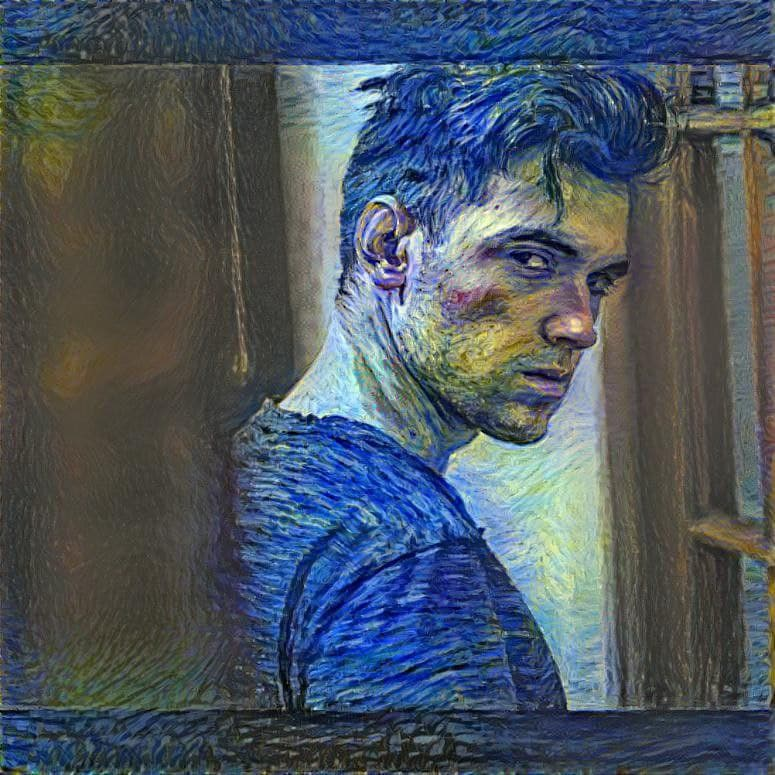

{% include head.html %}
{{ page.title }}

Bryan Gass
Computer Science student at Worcester Polytechnic Institute. Interested in machine learning, mathematics, cafe racers, finding the tastiest ramen.
{% include social_content.html %}
{% include navigation.html %}
{{ content }}